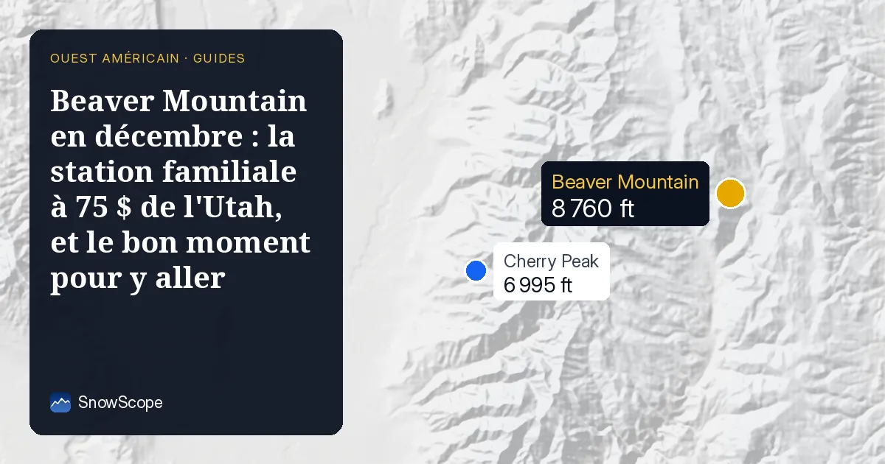
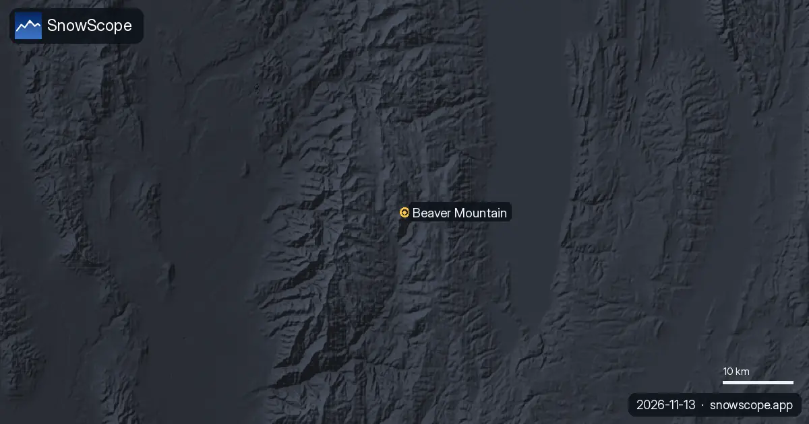

Beaver Mountain en décembre : la station familiale à 75 $ de l'Utah, et le bon moment pour y aller
The Beav possède une rareté dans le ski de l'Utah : un seul tarif adulte, 75 $, sans supplément les jours de forte affluence. Le hic, c'est le calendrier. D'après notre historique d'enneigement, début décembre à Beaver Mountain est souvent maigre, et le conseil honnête est de venir dans la seconde moitié du mois.
Consultez les prévisions neige en temps réel pour Beaver Mountain sur l'application SnowScopeHauteurs de neige, alertes poudreuse et carte 3D, gratuitement.
Une station familiale au-dessus de Logan Canyon
Beaver Mountain se trouve tout en haut de Logan Canyon, après la ville de Logan et avant Garden City et Bear Lake. Sur notre cartographie, elle compte 6 remontées et environ 19 mi (31 km) de pistes, entre 7 160 ft (2 181 m) et 8 760 ft (2 670 m) environ. C'est une affaire familiale, et cela se sent : une seule grille tarifaire, pas de village.

Décembre, semaine par semaine
C'est là que Beaver Mountain demande de la patience. À mi-montagne, vers 7 960 ft (2 425 m), la part des hivers avec une bonne couche de neige (une moyenne hebdomadaire de 20 in, 50 cm, ou plus) passe de 43 % la première semaine de décembre à 54 % la deuxième, 61 % la troisième et 76 % la semaine de Noël.
En dates concrètes : un 1 décembre type affiche 16 in (40 cm) à mi-montagne, un 15 décembre 22 in (57 cm) et un 25 décembre 28 in (71 cm). À la base, les chiffres sont plus bas, 17 in (42 cm) pour un 15 décembre type, avec seulement 33 % des hivers au-dessus de 20 in à cette date. Un décembre maigre (un sur dix) ne laisse que 10 in (25 cm) à mi-montagne le 15 : là, seules les pistes damées sont skiables.

Le tarif, et la carte de 10
Pour 2026-2027, le forfait journée adulte (12-69 ans) est à 75 $. Il n'y a aucun supplément les jours de pointe, ce qui est rare dans un État où la tarification dynamique est la norme.
Si vous habitez dans le coin, la carte de 10 forfaits fait baisser le coût par sortie : 720 $ si achetée au bureau de Logan, 740 $ en ligne. Beaver Mountain figure aussi sur la liste de l'Indy Pass : l'Indy Base Pass coûte 419 $ et l'Indy+ Pass, sans dates d'exclusion, 469 $, chacun donnant droit à deux jours dans chaque station partenaire.
Beaver Mountain ou Brighton ?
Brighton, dans Big Cottonwood Canyon, propose ses forfaits dynamiques à partir de 72 $ pour les premiers acheteurs, et affiche bien plus de neige en décembre selon notre historique : 37 in (94 cm) à mi-montagne pour un 15 décembre type, avec 89 % des hivers au-dessus de 20 in.
Le choix est donc une question de timing. Pour un tarif fixe sur lequel on peut compter, et un séjour après la mi-décembre, The Beav est l'option tranquille. Pour un voyage début décembre, l'enneigement de base plus généreux de Brighton est le choix plus sûr pour dépenser 72 $ ou plus.
La situation se dégrade-t-elle ?
Le début de saison s'est affaibli ici. Sur les 15 premiers hivers de notre historique, la mi-montagne affichait 26 in (66 cm) pour un 15 décembre type et 73 % des hivers dépassaient 20 in. Sur les 15 derniers hivers, c'était 17 in (43 cm) et 33 %. L'hiver dernier affichait 10 in (26 cm) à cette date. Prévoyez plutôt fin décembre, et surveillez la carte d'enneigement avant de prendre la route.
Conseils aux skieurs
- Visez la semaine avant Noël ou plus tard : les chances d'une bonne couche de neige augmentent chaque semaine de décembre.
- Les habitués du coin ont intérêt à regarder la carte de 10 forfaits ou l'Indy Pass plutôt que les billets à l'unité.
- Logan Canyon (US-89) est une route de montagne : prévoyez des chaînes ou des pneus neige.
- En début de saison, les pistes peuvent cacher des rochers : restez sur les pistes damées jusqu'à ce que la couche de base s'installe.
Références et crédits
- Beaver Mountain, tickets and passes 2026-2027 (official) www.skithebeav.com/tickets-and-passes/
- Indy Pass, shop 2026-27 (official) www.indyskipass.com/shop
- Brighton Resort, lift tickets 2026/27 (official) www.brightonresort.com/lift-tickets
- Snow King Mountain, winter day tickets (official store) store.snowkingmountain.com/en/catalogue/category/500-winter-lift-tickets/510-day-ticket_447/
- OpenSkiMap (mapped lifts and runs) openskimap.org/
- avalanche.org, US avalanche centers and forecasts avalanche.org/
À propos de ces chiffres
Chiffres de neige : historique SnowScope, 46 hivers passés (1980-81 à 2025-26) aux altitudes indiquées (bas, mi-pente, sommet), une reconstitution de la neige passée pour une zone, corrigée de l'altitude (base ERA5-Land ; Snow_Hydro 1 km pour le Maroc), pas les bulletins de la station. Neige actuelle : la carte SnowScope. Remontées, pistes et altitudes : cartographie OpenSkiMap. Prix : les pages officielles listées ci-dessous, consultées le 13 novembre 2026 ; les prix dynamiques varient avec la date et la demande.
Bulletins d'avalanche officiels: Utah Avalanche Center
Citer ce bulletin
Pour la recherche, l'enseignement ou la presse : chiffres et graphiques réutilisables librement sous CC BY 4.0 avec cette citation.
SnowScope (2026), Beaver Mountain en décembre : la station familiale à 75 $ de l'Utah, et le bon moment pour y aller, https://snowscope.app/blog/fr/2026/11/beaver-mountain-utah-december-cheap-skiing.html, consulté le 2026-11-15
SnowScope (Atlas Labs). (2026, November 15). Beaver Mountain en décembre : la station familiale à 75 $ de l'Utah, et le bon moment pour y aller. SnowScope snow reports. https://snowscope.app/blog/fr/2026/11/beaver-mountain-utah-december-cheap-skiing.html
BibTeX
@misc{snowscope2026beavermountainutahdecemb,
author = {{SnowScope (Atlas Labs)}},
title = {Beaver Mountain en décembre : la station familiale à 75 $ de l'Utah, et le bon moment pour y aller},
year = {2026},
month = nov,
howpublished = {\url{https://snowscope.app/blog/fr/2026/11/beaver-mountain-utah-december-cheap-skiing.html}},
note = {Published 2026-11-15 09:34 UTC; accessed 2026-11-15}
}· CC BY 4.0 · Méthodes, données et outils →
Beaver Mountain : neige et température selon l'altitude, cet hiver vs l'hiver dernier (outils) →
Suivre Beaver Mountain
Gratuit : un message quand la neige arrive, et la météo chaque matin.